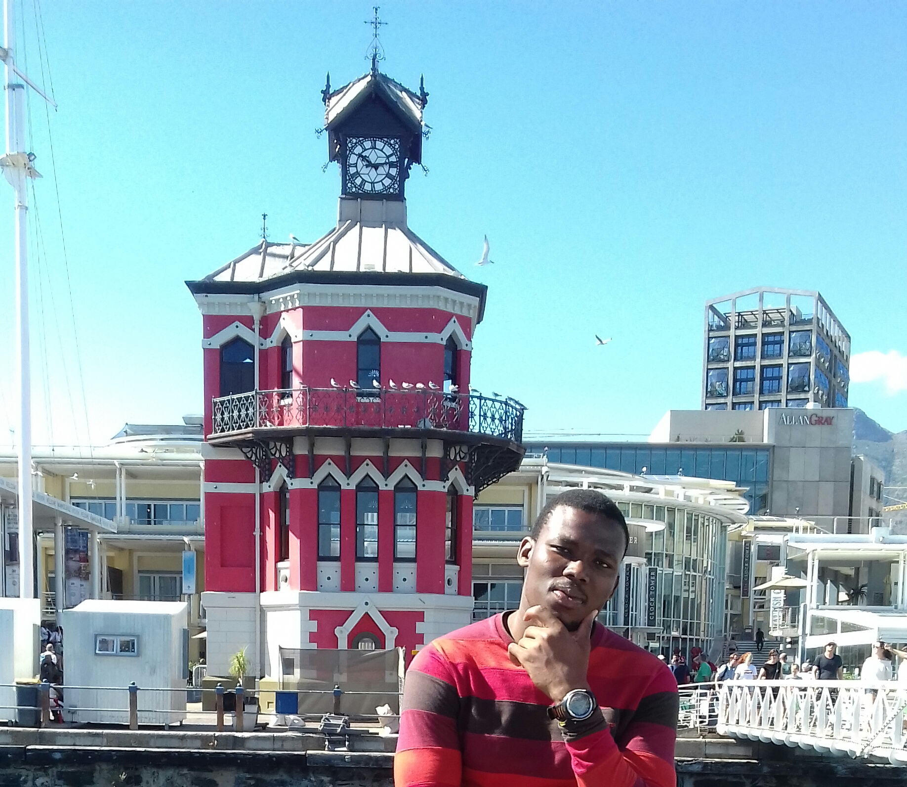

The City I Want To Visit

New York City, United States of American
What i would like to experience is the snow weather as the city gets about 15 times more snow than the South Pole every year (this shouldn't be too surprising though because Antarctica is a desert and therefore receives very little precipitation).
I would also like to visit the Central Park in the city to take more lovely pictures.
The Statue of Liberty (Liberty Enlightening the World; French: La Liberté éclairant le monde) is a colossal neoclassical sculpture on Liberty Island in New York Harbor in New York City, in the United States. The copper statue, designed by Frédéric Auguste Bartholdi, a French sculptor, was built by Gustave Eiffel and dedicated on October 28, 1886. It was a gift to the United States from the people of France. The statue is of a robed female figure representing Libertas, the Roman goddess, who bears a torch and a tabula ansata (a tablet evoking the law) upon which is inscribed the date of the American Declaration of Independence, July 4, 1776. A broken chain lies at her feet. The statue is an icon of freedom and of the United States, and was a welcoming sight to immigrants arriving from abroad.
* Italian is the most romantic of the romance languages! Over the centuries Italian has come to merit its reputation as the language of art, love and seduction.
| English Phrase |
Foreign Language Phrase (Italian) |
| Good morning sir. |
Buongiorno signore. |
| Where is mom |
dov'è mamma |
| would you marry me? |
Vuoi sposarmi? |
African Trading Port

At African Trading Port, personal relationships have been established with successive generations of leading artists, resulting in the compilation of an exquisite array of African objects from throughout the continent.
From Zimbabwean Shona sculptures, to West African artifacts and interiors, to refined glassware and pottery....we also offer a worldwide shipping service.
Clock Tower

Heading west, on the other side of Dock Road above the car park, is the 1894 Time Ball
Tower; its purpose was to act as an accurate reference for ships' navigators who set their clocks as the ball on the roof fell. Correct time was vital for navigators to be able to determine
precise longitude. Beside the tower is a 110-year-old dragon tree,
Dracaeno draco
, from the Canary Islands, and next to the tree is the original
harbour master's residence
(1860).
Swing Bridge
The bridge swings over the link between the Alfred Basin and the Victoria Basin in the Victoria & Alfred Waterfront. It was designed and constructed in 1997.